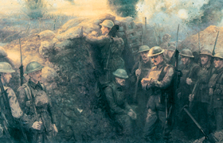

Lezione 18  La prima guerrra mondiale
La prima guerrra mondiale

Quando nel 1914 la Germania dichiarò guerra agli stati dell’Intesa, si aspettava di vincere in breve tempo e di diventare una potenza mondiale. Aveva un esercito potente, il più avanzato d’Europa, con un’artiglieria pesante senza eguali, un corpo ufficiale selezionato e soldati addestrati. I tedeschi contavano di tener fuori dal conflitto la Gran Bretagna, e di sconfiggere la Francia e la Russia nel giro di due - tre mesi. Si basavano su un piano militare elaborato a inizio secolo dal generale Alfred von Schlieffen. Poiché la Germania avrebbe combattuto su due fronti, la rapidità di azione e l’effetto sorpresa furono giudicati fondamentali. Il piano prevedeva innanzi tutto la violazione della neutralità del Belgio per attaccare e cogliere impreparata la Francia, che possedeva un buon esercito. Sconfitta la Francia, l’esercito tedesco avrebbe potuto concentrare le forze sul fronte orientale e affrontare la Russia, che aveva un esercito numeroso ma male equipaggiato a causa dell’arretratezza industriale del paese. L’inizio della guerra ebbe l’esito sperato da Schlieffen: nel giro di un mese un milione e mezzo di soldati tedeschi invase il Belgio ed entrò sul territorio francese, costringendo il governo francese a trasferirsi da Parigi a Bordeaux. La violazione della neutralità del Belgio fu però uno dei motivi che convinse gli inglesi a intervenire a fianco della Francia. Benché non avessero un esercito di leva, gli inglesi riuscirono in breve tempo a mobilitare oltre due milioni di volontari. Intanto l’attacco russo alla Germania e all’Austria costrinse i tedeschi a ritirare parte dell’esercito per trasferirlo sul fronte orientale, e questo permise la prima controffensiva dei francesi, che bloccarono l’avanzata dei tedeschi e li fecero arretrare. Il piano Schlieffen era fallito. Da una guerra di movimento si era passati a quella che fu chiamata guerra di logoramento, con soldati bloccati al fronte, da un lato e dall’altro in trincee improvvisate, con assalti che a causa delle nuove e potenti armi provocavano tantissimi morti, con tempi lunghi e estenuanti che nessuno aveva immaginato.